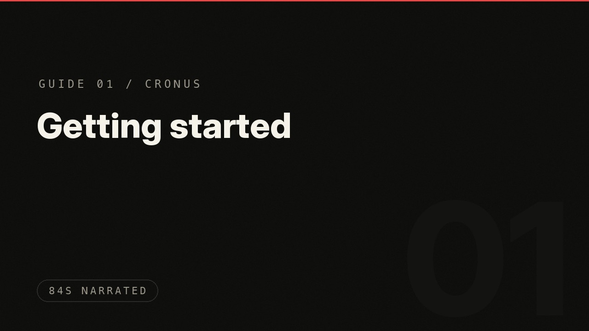
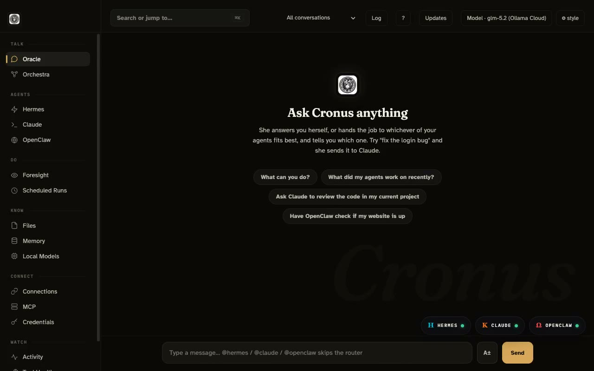
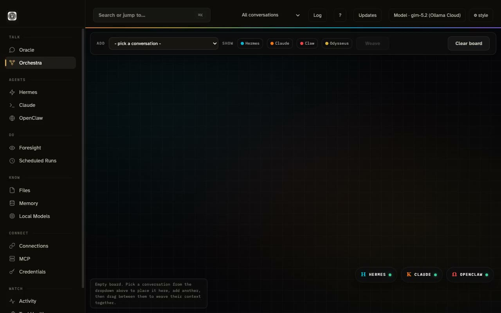
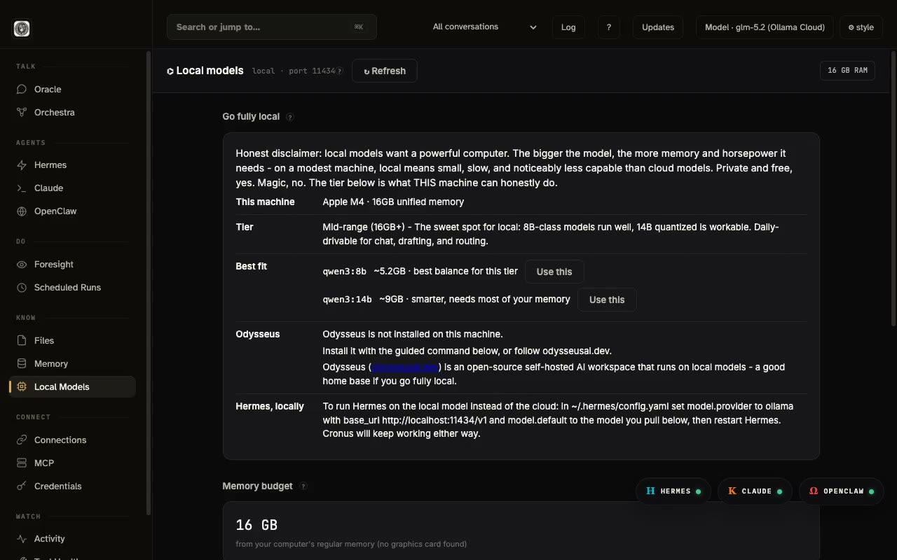
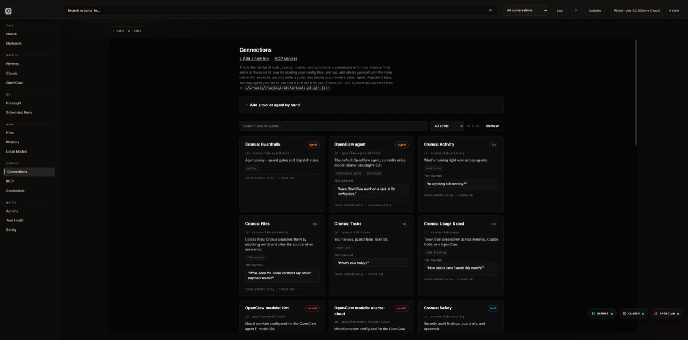
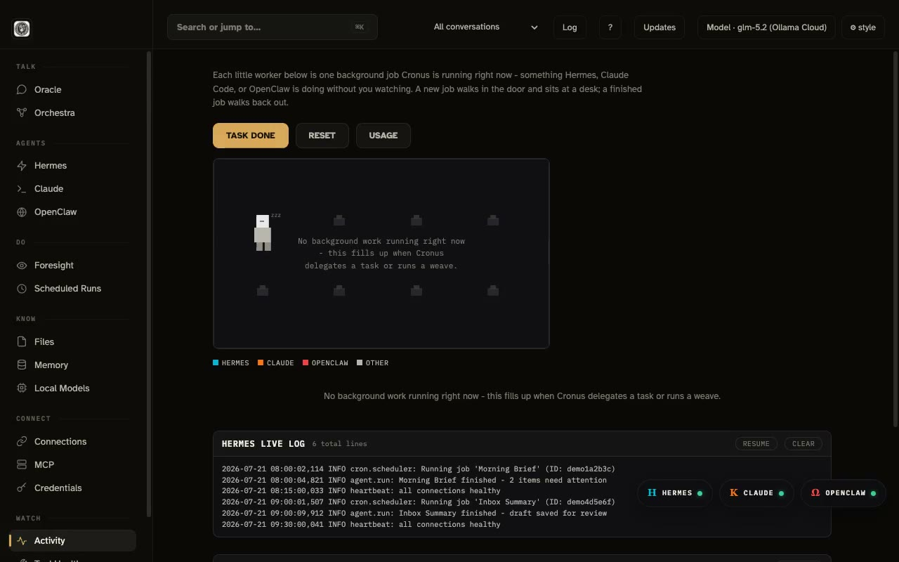

Guides
Every part of Cronus, explained in plain words - eight guides, each with a narrated video, because watching beats reading a manual. Start at 01 and go straight through, or jump to what you need.

Getting started
Fresh install to first answered message: the wizard, the health check, one free model, one question.

Chat and routing
Oracle's four moves, delegations with a definition of done, and the model picker.
Agent windows
The dock, direct lines, persistent transcripts, and why every window is a room.

Memory
What gets remembered, Foresight proposals, and why your memory lives on your disk.

Orchestra
The context board: place conversations side by side and weave, visibly.

Local models
Pulling free models with Ollama, fit badges, and the economics of routing cheap.

Connections and credentials
MCP tools on one map, and a vault where keys never enter a prompt.

Watching your stack
Activity, Tool Health, Safety audits, guardrails, and the morning brief.